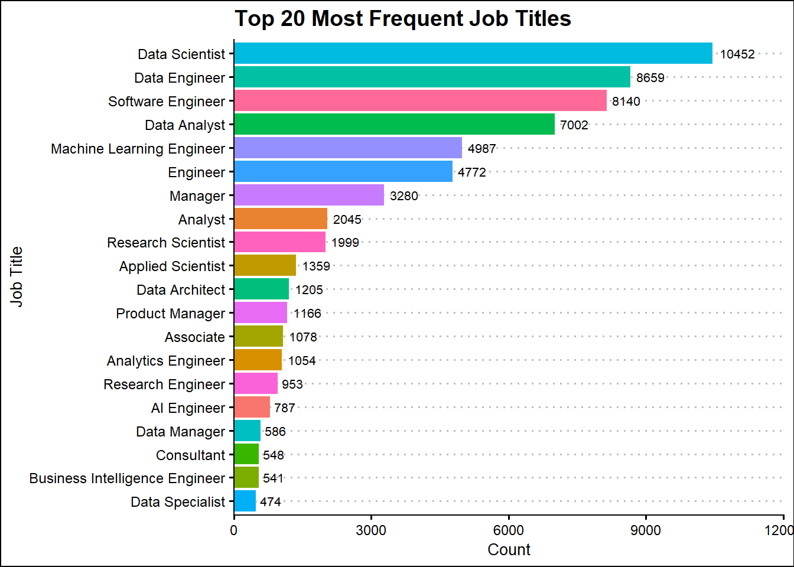
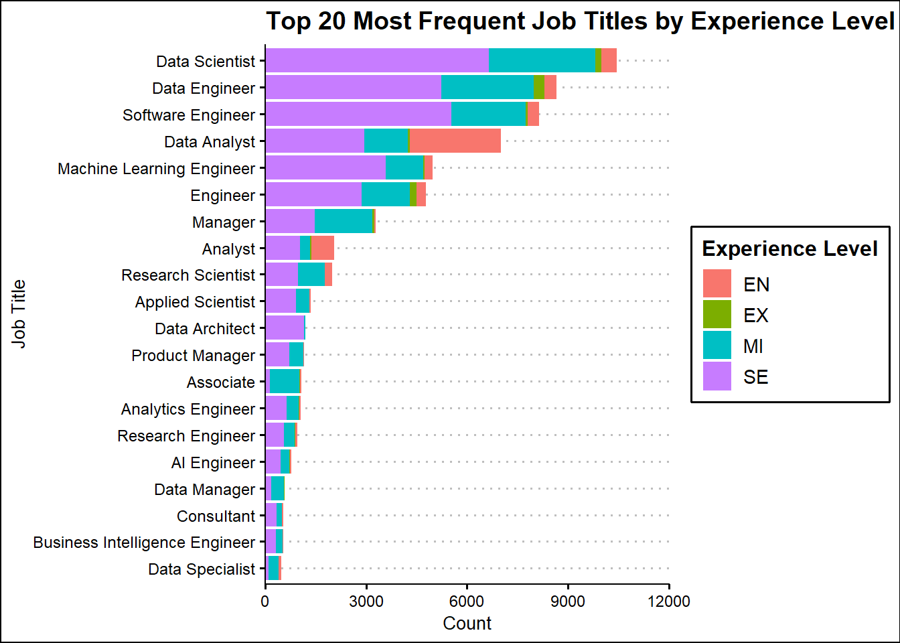
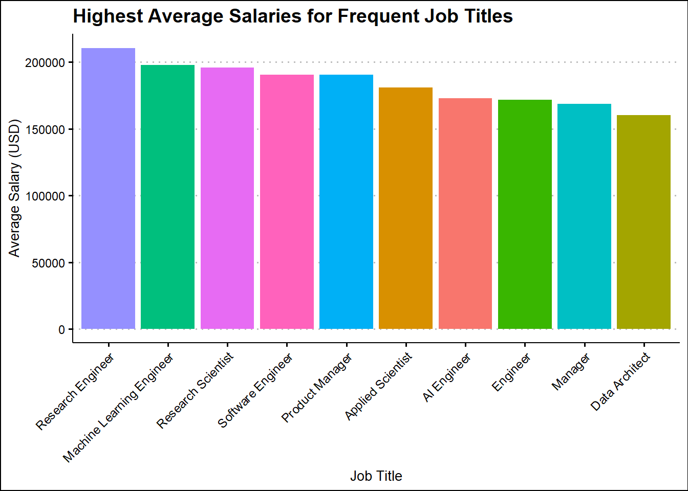
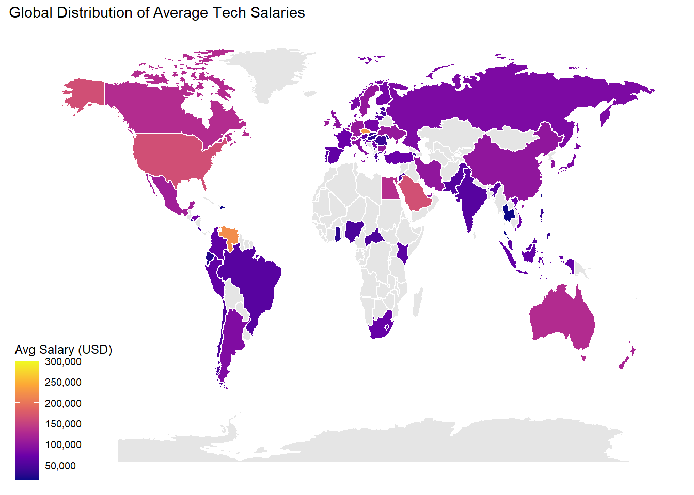

The objective of this analysis is to explore global salary trends for jobs in the tech industry and understand how factors like experience level, job title, company size, remote work ratio, and company location influence salaries. The focus is on providing descriptive and visual insights that could inform salary expectations or hiring strategies. The main variables of interest are listed below.
experience_level: The experience level in the job during the year.
EN - Entry level
MI – Mid-level
SE – Senior-level
EX – Executive-level
employment_type: The type of employment:
PT – Part-time
FT – Full-time
CT – Contract
FL – Freelance
job_title: The role worked during the year.
salary_in_usd: The salary in USD.
remote_ratio: The overall amount of work done remotely:
0 – No remote work (less than 20%)
50 – Partially remote/hybrid
100 – Fully remote (more than 80%)
company_location: The country of the employer’s main office or contracting branch.
company_size: The average number of people that worked for the company during the year:
S – Small (< 50 employees)
M – Medium (50–250)
L – Large (> 250)
Splitting the Dataset
library(tidyverse)
Warning: package 'tidyverse' was built under R version 4.4.3
Warning: package 'tidyr' was built under R version 4.4.2
Warning: package 'dplyr' was built under R version 4.4.3
Warning: package 'forcats' was built under R version 4.4.3
Warning: package 'lubridate' was built under R version 4.4.3
── Attaching core tidyverse packages ──────────────────────── tidyverse 2.0.0 ──
✔ dplyr 1.1.4 ✔ readr 2.1.5
✔ forcats 1.0.0 ✔ stringr 1.5.1
✔ ggplot2 3.5.1 ✔ tibble 3.2.1
✔ lubridate 1.9.4 ✔ tidyr 1.3.1
✔ purrr 1.0.2
── Conflicts ────────────────────────────────────────── tidyverse_conflicts() ──
✖ dplyr::filter() masks stats::filter()
✖ dplyr::lag() masks stats::lag()
ℹ Use the conflicted package (<http://conflicted.r-lib.org/>) to force all conflicts to become errors
The horizontal bar plot lot displays the top 20 most frequent job titles in the tech industry out the 376 different titles in the dataset. The length of each bar represents the total number of observations for that job title, and the color segments within each bar show how the count is distributed across different experience levels. We observe that the most common position is Data Scientiest, followed by Data Engineer, and Software Engineer. Most of the jobs are filled with Senior-level employees, but for Data Analysts, it is much more Entry-level.
library(ggthemes)#how many different job titlestrain_set %>%summarise(diff_job_titles =n_distinct(job_title))
diff_job_titles
1 327
#top 20 most frequent positions by count (list of job titles)top_20 = train_set %>%count(job_title, sort =TRUE) %>%slice_max(n, n =20) %>%pull(job_title) #filter training data for only top 20 jobs(dataset)top_20_set = train_set %>%filter(job_title %in% top_20)#horizontal barplotggplot(top_20_set, aes(x=fct_rev(fct_infreq(job_title)),fill=job_title)) +geom_bar() +geom_text(stat ="count", aes(label = ..count..), hjust =-0.2, size =2.8)+coord_flip() +labs(x ="Job Title", y ="Count", title ="Top 20 Most Frequent Job Titles") +theme_clean()+theme(legend.position ="none") +scale_y_continuous(expand =expansion(mult =c(0, 0.15)))
Warning: The dot-dot notation (`..count..`) was deprecated in ggplot2 3.4.0.
ℹ Please use `after_stat(count)` instead.

ggplot(top_20_set, aes(x =fct_rev(fct_infreq(job_title)), fill = experience_level)) +geom_bar() +coord_flip() +labs(x ="Job Title",y ="Count",title ="Top 20 Most Frequent Job Titles by Experience Level",fill ="Experience Level" ) +theme_clean() +scale_y_continuous(expand =expansion(mult =c(0, 0.15)))

Highest Average Salaries for Frequent Job Titles
This bar plot shows the 10 highest-paying job titles out of the 20 most frequently occurring roles in the dataset. The bars are sorted in descending order by average salary, making it easy to identify the most lucrative positions. We observe that Research Engineers stand out with the highest average salaries, exceeding $200,000. While the most frequent jobs are data scientist and data engineer, they do not rank as high in average salary, highlighting a distinction between popularity and pay. This visualization is useful for identifying which in-demand roles offer the highest earning potential and provides insight into how salary varies across job functions.
#average salary for each of the top 20avg_salary_top_20 = top_20_set %>%group_by(job_title) %>%summarise(avg_salary =mean(salary_in_usd, na.rm =TRUE)) %>%arrange(desc(avg_salary)) %>%slice_max(avg_salary, n =10) #show only the top 10ggplot(avg_salary_top_20, aes(x =fct_reorder(job_title, -avg_salary), y = avg_salary, fill = job_title)) +geom_col() +labs(title ="Highest Average Salaries for Frequent Job Titles",x ="Job Title",y ="Average Salary (USD)" ) +theme_clean() +theme(axis.text.x =element_text(angle =45, hjust =1),legend.position ="none")

Global Distribution of Average Tech Salaries
This choropleth map visualizes the average tech salary (in USD) by country, providing insight into how compensation varies across the globe. Each country is shaded based on its mean salary. Qatar stands out as the highest-paying country with an average salary of $300,000, which is notably higher than the rest and this is because there is only 1 observation from Qatar in the dataset. Other countries near the top of the salary list include the Czech Republic at $226,593, Venezuela at $221,000, and Saudi Arabia at $164,999. These high salaries may be influenced by specific local factors, such as the size and demand of the tech industry in each country, as well as living costs. The United States follows closely with an average salary of $163,743, which is consistent with other Western countries like Australia, Israel, and Canada, where salaries tend to range from $100,000 to $160,000. This aligns with the notion that developed economies with advanced tech industries tend to offer higher compensation. In contrast, many European, Asian, and Latin American countries report salaries in the range of $50,000 to $100,000. These countries, while having growing tech industries, may still face challenges such as lower costs of living, economic factors, and varying levels of demand for tech talent. The countries with the lowest salaries, such as Ghana, Ecuador, El Salvador, and Thailand, show average salaries below $30,000.
library(maps)
Warning: package 'maps' was built under R version 4.4.3
Attaching package: 'maps'
The following object is masked from 'package:purrr':
map
library(countrycode)
Warning: package 'countrycode' was built under R version 4.4.3
library(scales)
Attaching package: 'scales'
The following object is masked from 'package:purrr':
discard
The following object is masked from 'package:readr':
col_factor
#average salary by country and convert to full country nameavg_sal_country = train_set %>%group_by(company_location) %>%summarise(avg_salary =mean(salary_in_usd, na.rm =TRUE)) %>%mutate(country_name =countrycode(company_location, "iso2c", "country.name")) %>%arrange(desc(avg_salary))
Warning: There was 1 warning in `mutate()`.
ℹ In argument: `country_name = countrycode(company_location, "iso2c",
"country.name")`.
Caused by warning:
! Some values were not matched unambiguously: XK
#fix names to match with map dataavg_sal_country$country_name[avg_sal_country$company_location =="XK"] <-"Kosovo"avg_sal_country$country_name[avg_sal_country$company_location =="US"] <-"USA"avg_sal_country$country_name[avg_sal_country$company_location =="GB"] <-"UK"avg_sal_country$country_name[avg_sal_country$company_location =="CZ"] <-"Czech Republic"#world mapworld_map =map_data("world")merged =left_join(world_map,avg_sal_country, by =c('region'='country_name'))ggplot(data = merged, aes(x = long, y = lat, group = group, fill = avg_salary)) +geom_polygon(color ="white") +scale_fill_viridis_c(option ="C", na.value ="gray90", breaks =seq(50000, 300000, by =50000), # Adjust min, max, and steplabels =label_comma()) +labs(title ="Global Distribution of Average Tech Salaries", fill ="Avg Salary (USD)") +theme(axis.text =element_blank(), axis.ticks =element_blank()) +theme_map()

Experience Level by Company Size
The heatmap for experience level by company size highlights that medium-sized companies have the highest employee count, with 71,545 employees, compared to 2,111 in large companies and 147 in small companies. Medium-sized companies show a diverse range of experience levels, from entry-level to executive-level employees, which explains their larger employee base. Smaller companies, with only 147 employees, have a more concentrated distribution of experience levels, often skewed towards entry-level or mid-level roles. Large companies, with 2,111 employees, have a more balanced distribution but still fewer employees overall compared to medium-sized companies. In summary, the heatmap shows that medium-sized companies dominate the dataset in terms of employee count and support a wide range of experience levels.